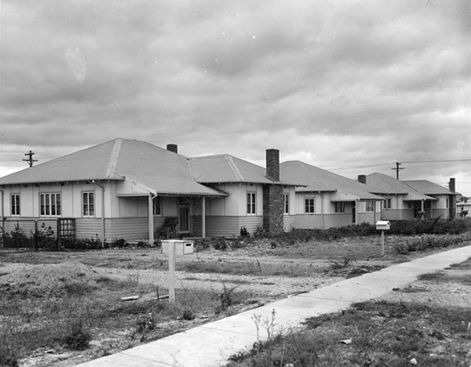

About The Tocumwal Archive
The Tocumwal Archive is a collection of stories and photographs, about living in the houses that were moved from the Tocumwal air force base in New South Wales, to the Canberra suburb of O'Connor. Stories and photographs are archived according to the donor's name. Ongoing community collection and maintenance of the Archive is encouraged. The Archive is open for research use and the contribution of material at the ACT Heritage Library in the Woden Town Library.

Origins
The origin's of the Tocumwal project

Tocumwal to Canberra
The Gallery

Early Years
(Beta)